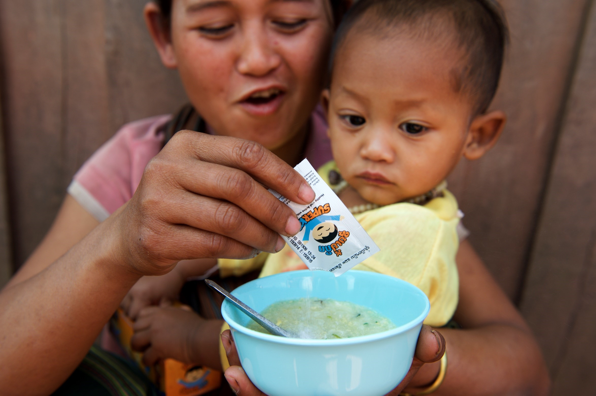
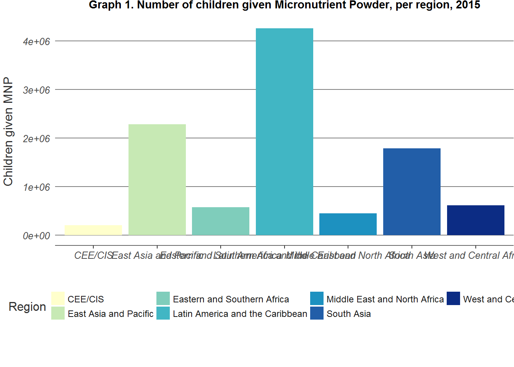

MNP

Scaling up has been effective, but fluctuations in coverage have left some of the most vulnerable children at risk.

Home fortification with micronutrient powders offers one of the best opportunities for improving children’s diets when nutrient needs cannot be met with locally available foods alone.
Micronutrient powders (MNP) are best introduced as part of an IYCF strategy. When combined with counselling for mothers on complementary feeding, MNP interventions are particularly effective at improving children’s diets and preventing micronutrient deficiencies, such as iron-deficiency anaemia. In 2015, 76% of countries implemented MNP interventions integrated with IYCF programmes.
#Mapa integrationIn 2015, MNP interventions reached more than 10 million2 children 6-59 months of age in 65 countries. The scale and reach of MNP programmes varied across the regions, with Latin America and the Caribbean, East Asia and the Pacific and South Asia accounting for two thirds of all children reached.
Map 2. Children given Micronutrient Powder, per region, 2015

La misma pero interactiva…
##
## Attaching package: 'plotly'## The following object is masked from 'package:ggplot2':
##
## last_plot## The following object is masked from 'package:stats':
##
## filter## The following object is masked from 'package:graphics':
##
## layout